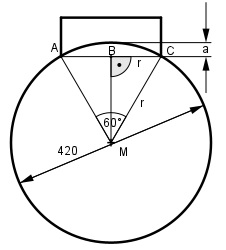
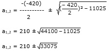

Aufgabe 238 Berechnen Sie das Maß a des dargestellten Bremsklotzes.

Das Dreieck AMC ist gleichseitig, da 3 mal 60° Winkel. Satz von Pythagoras im Dreieck BMC: r r2 = (r – a)2 + (---)2 2 r2 r2 = r2 - 2 * r * a + a2 + ---- | -r2 r r2 0 = a2 - 2 * r * a + ---- 4 a2 - 420a + 11 025 = 0 p, q – Formel: p = -420 ; q = 11 025
a1,2 = 210 ± 181,9 a1 = 210 – 181,9 = 28,1 mm a2 = 210 + 181,9 = 391,9 mm keine Lösung > als r